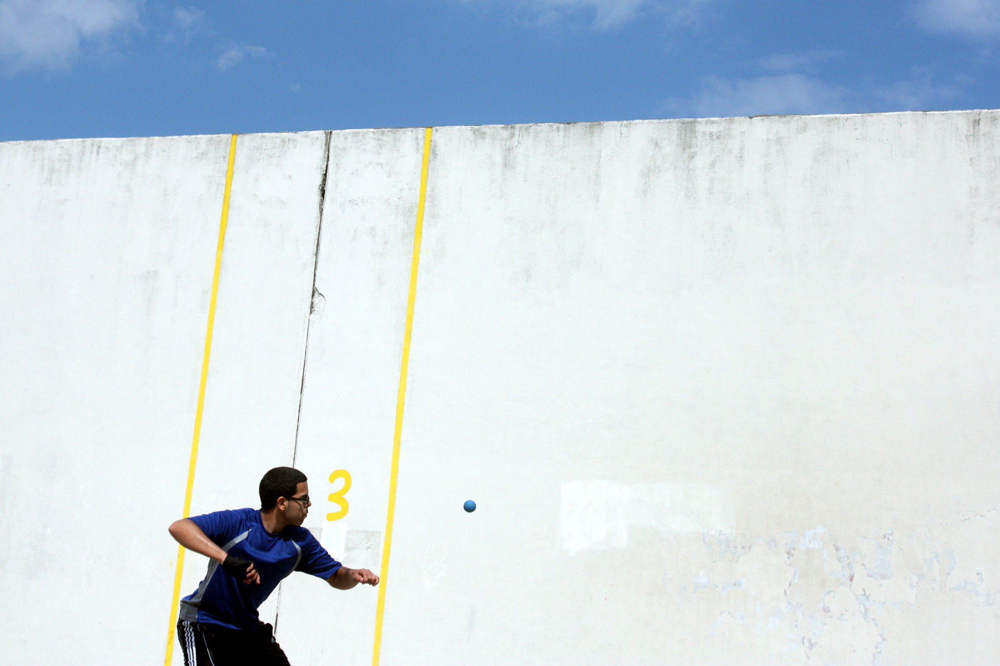
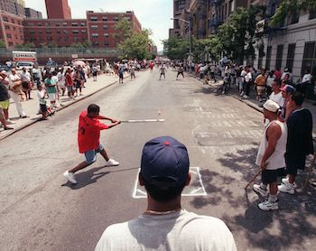

*Heroes of Metro Magic*
Project Abstract
Magic is the use of unseen, supernatural, or mysterious powers to make impossible things happen. It is the driver of high fantasy novels, role-playing games, and epic films, where the unlikeliest of heroes overcome dark forces against insurmountable odds. It is, of course, nearly all fiction, but unfortunately, dark forces are universal. Many in our communities live every day with overwhelming adversity, especially in a city with as many challenges as New York. But joy can still be conjured from the most improbable of places, from the most implausible of people. And in these times, that is nothing short of magical.
Project Description
The goal of this project is to highlight and celebrate the ways people create joy in New York City with very little resources. Amid one of the worst affordability crises in recent memory, where many New Yorkers struggle to afford basic living expenses and wealth inequality continues to grow, I find it remarkable that people still discover meaningful ways to connect, play, and be happy. Despite financial hardship, communities continue to build moments of joy from the simplest materials and shared experiences. Often, this joy emerges through creativity and resourcefulness. A broom handle and a bottle cap become the foundation of a game. A Citi Bike and a broken golf club are transformed into a new activity. In other cases, people turn to cultural traditions that remind them of home, such as Ecuadorian volleyball matches or the Uruguayan sport of fútbol played on rooftop courts. These activities demonstrate a kind of everyday alchemy: transforming ordinary objects, spaces, and traditions into sources of happiness and community. This transformation is the central theme of the project. Through photography, I want to document these moments and then elevate them through image enhancement and editing techniques. The visual transformation of the images will serve as a metaphor for the imaginative transformation already taking place in real life. The people featured in this project become modern-day magicians, creating joy and connection from circumstances that might otherwise seem limiting. The photographs will be taken in public spaces throughout New York City that are accessible to anyone, regardless of financial background or social status. This accessibility is essential to the project’s message. Expensive clubs, exclusive venues, and costly recreational activities are intentionally excluded. Instead, the focus remains on community spaces where people gather through shared interests rather than economic status. The intended audience is New Yorkers who may have forgotten the value of simple, community-driven experiences in a city increasingly shaped by status, consumption, and financial pressure. The project argues that fulfillment does not require luxury or modern indulgence; meaningful joy can be found in connection, creativity, and collective participation. As the project develops, each phase expands this magical metaphor. In Incantation II, the photographs will be transformed through fantasy-inspired visual effects, introducing sprawling landscapes, supernatural creatures, and spellbinding imagery that elevate the subjects to the heroic status they deserve. In Incantation III, these fantasy elements will move into animation through After Effects, bringing the still images to life. Finally, in Incantation IV, the project will incorporate video content featuring participants actively engaged in these activities. Interviews will explore how these communities create joy and escape from the pressures of modern life through their self-made enchantments. The website itself reflects this spirit of escapism. Inspired by the creativity and charm of early internet experiences, it aims to transport visitors away from the polished homogeneity of the modern web and into a simpler time (cameronsworld and spacejam are some major inspirations). Ultimately, the project celebrates the magic already present in everyday life and the people who create it.
Biography
Stephen DeAugustino is an Emmy Award-winning producer for NBCUniversal based in New York City. He graduated from the University of Central Florida (Go Knights) with dual degrees in Broadcast Journalism and Digital Media, before embarking on his current 15-year career. Primarily focusing on producing linear television programs and feature work, he has also begun working in streaming media and the digital space in recent years as the industry has changed over time. He loves repertory movie theaters, a good omakase sushi spot, and his painfully terrible football team, the Jacksonville Jaguars.
Photo Essay

